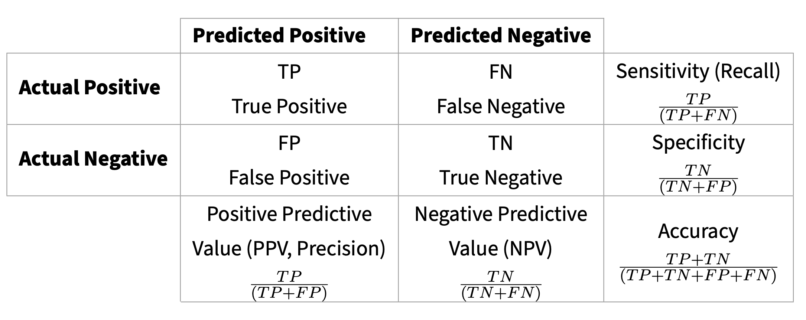

Assignment 1: Next Generation Sequencing Technologies
DNA sequencing can be broadly defined as the determination of the identity and order of nucleic acid residues in biological samples. Bioinformatic analysis and sequencing results are greatly affected by the choice of sequencing technlogy. Sequencing technologies can be broadly categorized in three groups:
- First-Generation Sequencing
- First-generation sequencing methods, most notably Sanger sequencing, relied on using radio- or fluorescently-labelled dNTPs or oligonucleotides before electrophoretic analysis.
- Second-Generation Sequencing
- Second-generation sequencing is characterized by its high throughput due to the parallelisation of a large number of reactions, sequencing thousands to millions of DNA fragments. Second-Generation sequencing includes the current sequencing leader, Illumina.
- Third-Generation Sequencing
- Third-generation sequencing technologies include those capable of sequencing single molecules, so they don’t require DNA amplification. The two most common third-generation sequencing technologies include PacBio (Pacific Biosciences) and ONT (Oxford Nanopore).
| Generation | Sequencing Technology | Year | Company | Avg Read Length | Cost per Gigabase |
|---|---|---|---|---|---|
| First Generation | Sanger Sequencing | 1977 | Frederick Sanger | ~800 bp | Very High (>$1000) |
| Second Generation | 454 Sequencing | 2005 | Roche | ~400 bp | High ($100 - $500) |
| Illumina (Solexa) | 2006 | Illumina | ~150-300 bp | Low ($1 - $10) | |
| Ion Torrent | 2010 | Thermo Fisher | ~200 bp | Medium ($10 - $50) | |
| Third Generation | PacBio SMRT | 2009 | Pacific Biosciences | 10,000+ bp | High ($50 - $200) |
| Oxford Nanopore | 2014 | ONT | 10,000+ bp | Medium-High ($10-$100) |
We will use a human genome standard (HG002) that has been extremely well-characterized as our gold standard. The HG002 genome assembly is part of an effort hosted by NIST that includes The Telomere-to-Telomere Consortium, the Human Pangenome Reference Consortium and the Genome in a Bottle Consortium, to sequence, assemble and polish the HG002 (also known as GM24385 and huAA53E0) cell line, creating a human “genome benchmark” for the HG002 reference material that covers all bases of the diploid genome and is perfectly accurate. Hence, their own “Q100” project nickname, which refers to a Phred quality score of 1 error per 10 billion bases.
Some reference papers regarding this dataset:
- Zook, J., Catoe, D., McDaniel, J. et al. Extensive sequencing of seven human genomes to characterize benchmark reference materials. Sci Data 3, 160025 (2016). https://doi.org/10.1038/sdata.2016.25
- Zook, J.M., McDaniel, J., Olson, N.D. et al. An open resource for accurately benchmarking small variant and reference calls. Nat Biotechnol 37, 561–566 (2019). https://doi.org/10.1038/s41587-019-0074-6
- Zook, J.M., Hansen, N.F., Olson, N.D. et al. A robust benchmark for detection of germline large deletions and insertions. Nat Biotechnol 38, 1347–1355 (2020). https://doi.org/10.1038/s41587-020-0538-8
- Liao, WW., Asri, M., Ebler, J. et al. A draft human pangenome reference. Nature 617, 312–324 (2023). https://doi.org/10.1038/s41586-023-05896-x
- Rhie, A., Nurk, S., Cechova, M. et al. The complete sequence of a human Y chromosome. Nature 621, 344–354 (2023). https://doi.org/10.1038/s41586-023-06457-y
We will compare the characteristics and SNP calls for three sequencing technologies: Illumina, PacBio HiFi, and Nanopore.
Learning objectives
At the end of this week’s assignment you will be able to:
- Understand the principles behind the different sequencing technologies
- Library preparation methods and their effect on the data
- Understand the notion of a resequencing experiment and a reference genome
- Perform quality check and control (QC) on Illumina short-read data
- Perform quality check and control on long-read sequencing data
- Align short-reads to a reference genome
- Align long-reads to a reference genome
- Understand the SAM and BAM format
- Call SNPs against a reference genome in short-read data
- Call SNPs against a reference genome in long-read sequencing data
- Understand the VCF format
- Analyze differences between sequencing technologies
- Use common benchmarking metrics
Input and outputs
The input for this assignment are the fastq files generated by Illumina, PacBio HiFi and ONT of the standard human genome HG002. Each student will be given a chromosome to work with.
Illumina files:
/project2/msalomon_1816/trgn_515/1_seq_techs/illumina/fastq
PacBio files:
/project2/msalomon_1816/trgn_515/1_seq_techs/pacbio/fastq
Nanopore files:
/project2/msalomon_1816/trgn_515/1_seq_techs/ont/fastq
Benchmarking file:
/project2/msalomon_1816/trgn_515/1_seq_techs/benchmark/HG002_GRCh38_1_22_v4.2.1_benchmark.vcf.gz
Human Reference Genome GRCh38
/project2/biodb/genomes/Homo_sapiens/NCBI/GRCh38/Sequence/BWAIndex/genome.fa
/project2/biodb/genomes/Homo_sapiens/NCBI/GRCh38/Sequence/WholeGenomeFasta/genome.fa
Original data can be found at: https://ftp-trace.ncbi.nlm.nih.gov/giab/ftp/data/AshkenazimTrio/HG002_NA24385_son/ For the benchmarking: https://ftp-trace.ncbi.nlm.nih.gov/giab/ftp/release/AshkenazimTrio/HG002_NA24385_son/NISTv4.2.1/GRCh38/
The final output will be a list of SNPs and statistics for each sequencing technology.
Required software
In order to complete the assignment, the following tools need to be installed:
mamba install bioconda::filtlong
mamba install bioconda::minimap2
mamba install bioconda::seqtk
mamba install bioconda::seqkit
module load bwa
module load htslib
module load bcftools
module load samtools
module load fastqc
module load gcc/13.3.0
module load bedtools2/2.31.1
module load gatk/4.5.0.0The easiest way to install all these dependencies is to use the conda environment I provide here:
conda activate /project2/msalomon_1816/trgn_515/conda_env/1_seq_techsManipulating Fastq files
Fastq files are simply text files with a specific and constant format, so you can always parse them using bash or any scripting language. For instance, since you know the read sequence is on the 2nd line and the quality sequence is on the 4th line, to get read length for every read you can simply do:
awk 'NR==4 {print length}' <fastq_file.fq>However, for reproducibility and consistency (and to save us time), there are already well-established software to parse and manipulate fastq files efficiently. Some widely used tools are: 1. seqtk - https://github.com/lh3/seqtk 2. seqkit - https://bioinf.shenwei.me/seqkit/ 3. bioawk - https://github.com/lh3/bioawk
All of these come with a pletora of algorithms to parse fastq files, change between formats, merge, split, etc. seqkit is more complex and it has more options for parallel computing, but seqtk is more lightweight and usually faster. I suggest you take some time to check the tutorial for each of them in their respective github pages.
Task 1: Compare raw read statistics between sequencing technologies
For this first task, let’s extract some basic metrics from the raw fastq files and compare between sequencing technologies. To be efficient, let’s take a random sample of 200,000 reads per sequencing technology.
The metrics we will report are:
- Read length
- Average Base quality per read
- GC content per read
One way to do it using one of the previously shown software is:
seqtk sample -s 100 # random seed
<fastq_file> # Input fastq file
<n_reads> # Number of reads to downselect
| seqkit fx2tab # Main seqkit function to get read stats
-q # Get average read quality
-l # Get read length
-g # Get GC content
-n # Only print read name
- > <output_file.txt>- Plot a histogram of each of the three metrics. Plot all illumina (forward reads only), ont and pacbio together. (10pts)
- Describe briefly the differences in read length, base quality and GC content per sequencing platform (10pts)
Oxford Nanopore output files
All sequencing technologies reviewed during this assignment output reads either in Fastq or BAM format (unaligned BAM or aligned if a reference genome is provided). Remember that both Fastq and BAM format are interchangable.
However, ONT also output a special type of file. The output of Nanopore sequencing is in the Pod5 file format. This was previously known as Fast5 (and will probably be something different soon!). Pod5 is a lot more efficient and lightweight. Pod5 files are binaries files that contain all the data that nanopore sequencing outputs, which includes raw sequence data (picoampere measurements taken at the nanopores thousands of times per second) and sample metadata.
The process of transforming the raw signal data into basepairs is known as basecalling, and it’s one of the most important elements in the Oxford Nanopore Technology. Usually this is done in real-time during sequencing, but sometimes you may want to do it afterwards. Even though the real-time output will be demultiplex, when you basecall on your own you will have to demultiplex it again through the demux command. Everything can be done using dorado (this software is likely to change, as it always happens with Nanopore).You can do so with the following command:
dorado basecaller # Basecalling algorithm
-r # Recursively scan through folders and files. This may not be necessary
--kit-name # ONT Nanopore kit (eg: SQK-NBD114-24 for native barcoding, SQK-RPB114-24 for rapid barcoding or EXP-PBC001 for PCR expansion kit)
<model> # Model for basecalling: fast, hac, sup
<input_directory> # Input directory with Pod5 files
| dorado demux # Demultiplexing algorithm
--threads <n> # Number of threads
--no-classify # Skip barcode classification, as this is done during basecalling
--emit-fastq # Output fastq. Default is BAM
--barcode-both-ends # Optional: Require both ends of a read to be barcoded for more precise but less sensitive barcoding
--output-dir <out_dir>For better quality, ONT has recently allowed users to perform duplex basecalling. By reading both the forward and reverse strands through the pore, duplex basecalling can increase the confidence in the basecalls, thus increasing the base quality. To perform duplex basecalling and demultiplexing, you can run the following code:
# run your dataset through simplex basecalling with barcoding enabled
dorado basecaller <model> <pod5> --kit-name <barcode-kit> | dorado demux --no-classify --output-dir <out_dir> # classify and split the dataset
# then fetch the read ids per barcode from the corresponding .bam and put it in a read.txt file
# then run
dorado duplex <model> <pod5> --read-ids reads.txt
# and this will run duplex basecalling only with the read ids from that barcodeQuality Check
The first step in most bioinformatic analysis will be to visualize the quality of the raw reads.
Most quality control depends on base qualities. Sequencers attempt to read the “sequence” of DNA letters. For each base they read, they assign a quality score that serves as a measure of confidence in that base, called a Phred quality score. These typically range from 0-40, with higher values meaning greater confidence in the base that was called. This is a logarithmic scale, such that, if a base has an associated quality score of 20, there is a 1 in 100 chance that it is incorrect. If it has a score of 30, there is a 1 in 1,000 chance it is incorrect.
| Phred Quality Score | Probability of incorrect basecall | Basecall accuracy |
|---|---|---|
| 10 | 1 in 10 | 90% |
| 20 | 1 in 100 | 99% |
| 30 | 1 in 1000 | 99.9% |
| 40 | 1 in 10,000 | 99.99% |
Quality check for short-reads - FastQC
The most widely used tool for visually evaluating fastq data is FastQC. If FastQC is ran without arguments, it will open an interactive GUI version of the software. But in most cases, we will run it in the command line.
A basic way to call FastQC will the following command:
fastqc # The main command call
--extract # Extract files from output
-o <output_dir> # Directory for output files
-d <temporary_dir> # Directory for temporary files
<input.fq> # Input fasta fileThis code can be embedded within a python script or a cluster slurm batch job. An easy way to run it within bash in a batch script would be:
#!/bin/bash
#SBATCH --account=msalomon_1385
#SBATCH --partition=main
#SBATCH --nodes=1
#SBATCH --ntasks=1
#SBATCH --cpus-per-task=1
#SBATCH --mem=5G
#SBATCH --time=1:00:00
#SBATCH --job-name=fastqc
#SBATCH --output=/scratch1/USER/temp/fastqc_%j.%a.out
#SBATCH --error=/scratch1/USER/temp/fastqc_%j.%a.err
# Put the input and output directories into variables for conciseness
in_dir=/project/msalomon_1385/TRGN_515/1_exp_evolution/data/m_tuberculosis/fastq
out_dir=/scratch1/USER/1_exp_evolution/fastq_qc
# Then we loop over all files within the directory
for in_fa in $in_dir/*.fastq.gz; # Initiate loop
sample=$(basename $in_fa .fastq.gz) # Set up a sample variable for the output.
fastqc -o $out_dir/$sample --extract --dir $out_dir $in_fa
done # Finilize loopBut remember, this is just one way to run it!
Quality check for long-reads
You can visualize the quality of your long reads using FastQC as you would with your short-reads. However, there’s also specific software built for long-reads. A widely used software is NanoPlot. Another option is LongQC.
If you use FastQC on very long reads, it may run out of memory. By default, FastQC allocates a very small amount of memory (512MB), which makes it run out of memory with very long reads. The way to fix this issue is to allocate more memory using the --memory flag. So if you use FastQC, allocate 5Gb, which should be more than enough. You can do this with the command:
fastqc --extract -o <output_dir> --d <temporary_dir> --memory 5000 <input.fq>NanoPlot is equally easy to run. It will give similar output to FastQC, but more centered on read length and base quality, which is often the obsession with Nanopore long reads.
NanoPlot
--fastq <input.fq> # Input in fastq file
-o <output_dir> # Output directory
--loglength # Set up for log read length in the plotsTask 2: Run FastQC on Illumina reads
Run FastqQC on the Illumina reads and answer the questions. Focus only on the following figures:
- Per base sequence quality
- Per sequence quality scores
- Per base sequence content
- Per sequence GC content
- Per base N content
- Sequence Length Distribution
- Overrepresented sequences
- Adapter Content
Answer the following questions for each plot:
- What is the plot representing? (10pts)
- What quality issue (if any) is the plot showing? (10pts)
- How would you solve the issue (if any) represented in the plot? (10pts)
Answer the questions for the forward reads only.
Quality Control (QC)
Now that we have visualize the raw fastq files, we may want to filter some reads and remove potential errors from the reads in order to remove poor quality data. This is called quality control. Most basic quality control tools will perform two or three tasks:
- Remove low quality reads
- Trim low quality bases at the beginning and end of reads
- Trim adaptors
These steps should be sufficient for QC. Data that requires more aggressive steps may be too unreliable to continue analysis.
QC for short-reads - Trimmomatic
Multiple tools are commonly used to perform QC on short-reads: 1. Trimmomatic - https://github.com/usadellab/Trimmomatic 2. fastp - https://github.com/OpenGene/fastp 3. Trim Galore! - https://github.com/FelixKrueger/TrimGalore
We will use Trimmomatic for this. To remove adapters, you need to provide a file with the adapters for the Illumina machine the reads come from. If you installed Trimmomatic through a conda distribution, that should be within: anaconda3/share/trimmomatic/adapters/. You can also find it at their github page.
To run trimmomatic:
trimmomatic PE # Main trimmomatic function for paired-ends reads
<input_1.fastq.gz> # Forward reads
<input_2.fastq.gz> # Reverse reads
<output_1.fastq.gz> # Output forward reads
<output_unclassified_1.fastq.gz> # Output unclassified reads from forward file
<output_2.fastq.gz> # Output reverse reads
<output_unclassified_2.fastq.gz> # Output unclassified reads from reverse file
SLIDINGWINDOW:<window_size>:<quality> # Sliding window for quality trimming.
LEADING:<quality> # Remove leading bases under quality
TRAILING:<quality> # Remove trailing bases under quality
AVGQUAL:<quality> # Average quality to remove a read
MINLEN:<length> # Minimum length to remove a read
ILLUMINACLIP:</path/to/adapter_file.fa>:<seed_mismatches>:palindrome_clip_threshold>:<simple_clip_threshold>For the SLIDINGWINDOW argument, a window of window_size size moves along the read. If the average quality of the window falls below quality, the remaining of the read is clipped. This prevents reads to be removed just because of a few bad bases. This argument assumes the quality will only get worse at the end of the read.
The LEADING and TRAILING arguments will start at the begonning and end of the read and keep removing bases as long as their quality is below quality.
For ILLUMINACLIP, we need to provide the file for the adapters. This depends on the Illumina machine. The seed_mismatches argument specifies the maximum number of base mismatches allowed within a short initial sequence from the read (“seed”, 16bp) used to identify potential adapter matches, allowing for a small degree of mismatch when searching for adapters to clip. Trimmomatic uses two strategies to find adapters: the sample mode, and the palindromic mode. simple_clip_threshold is the minimum score threshold for the adapter to align to the read for clipping to take place in the simple mode. Suggested values are 7-15. palindrome_clip_threshold specifies how accurate the match between the two ‘adapter ligated’ reads must be for paired-end palindrome read alignment. Suggested values are around 30. For more information, these two strategies are extensively explained in the Trimmomatic publication.
For our dataset, we can run Trimmomatic within bash as follows:
in_dir=/project/msalomon_1385/TRGN_515/1_seq_techs/illumina
out_dir=/scratch1/USER/1_exp_evolution/fastq_pass
adapters=/path/to/conda/share/trimmomatic/adapters/TruSeq3-PE.fa
# Unlike FastQC, we need to run both forward and reverse reads together
for file in $in_dir/*_1.fastq.gz; # Initiate loop with forward reads only
sample=$(basename $in_fa _1.fastq.gz) # Set up a sample variable for input and output.
fwd=$in_dir/${sample}_1.fastq.gz # Forward read
rev=$in_dir/${sample}_2.fastq.gz # Reverse read
trimmomatic PE $fwd $rev $out_dir/${sample}_1.fastq.gz /dev/null $out_dir/${sample}_2.fastq.gz /dev/null SLIDINGWINDOW:4:5 LEADING:5 TRAILING:5 AVGQUAL:5 MINLEN:35 ILLUMINACLIP:$adapters:2:30:10
# Note we send unclassified reads to /dev/null
done # Finilize loopTask 3: Run FastQC after running Trimmomatic
Compare the following FastqQC plots before and after:
- Per base sequence quality
- Per sequence quality scores
- Per base sequence content
- Per sequence GC content
- Per base N content
- Sequence Length Distribution
- Overrepresented sequences
- Adapter Content
Answer the following questions for each plot:
- What has changed after running trimmomatic? (10pts)
- Why did the change happen? (10pts)
QC of long reads
The QC for long reads is very similar to that of short-reads, the only difference is the type of adaptors expected and the distribution of quality scores. This are some example of softwares for long-read QC:
filtlong. An interesting feature of filtlong is that you can keep the best x% reads, rather than hard filtering. For instance:
filtlong
--min_length <n> # Minimum read length
--min_mean_q <n> # Minimum mean base quality
--keep_percent <n> # Keep the best n% of reads
<input_reads> |
gzip > <output_reads>.gzTask 4: Long read QC
Filter raw reads for the nanopore and pacbio datasets. Use filtlong. Keep the best 95% of reads.
Choose minimum read length and base quality based on the data from the first time you ran NanoPlot.
- What changes in the statistics and plots can you observe after running filtlong? (10pts)
Read mapping to a reference genome
Short-read mapping
BWA
To run any read mapping software, we first need a reference genome. We will use the Human Reference Genome version GRCh38. You can find the CARC location for this file at the beginning of this document.
Most modern mappers require building an index to easily parse the reference genome during mapping. In fact, some of the biggest speed and memory improvements over early mappers was thanks to improved indexing methods. If they don’t require an index file, it’s because they index the reference genome on the fly. BWA, for instance, is based on the Burrows-wheeler Transform for powerful indexing to quickly locate where a read might align within the reference genome. The indexing for BWA can be done with the following command:
bwa index $ref_genomeThat will create multiple files with the same name as your reference genome, but ending in different extensions. Those are the indexes. Keep those files with the same and location as your reference genome. If a software requires those indexes, you just need to show the location of the reference genome, and it will assume the name and location of all the indexes.
On CARC there’s already a folder with the indexed GRCh38 reference genome, so we don’t need to do this step.
The basic use of BWA requires only the indexed reference genome and the files for the reads (or single file if not paired-end). To run BWA, do:
bwa mem # Main call for the mem algorithm within BWA
<reference_genome> # Reference genome
<fastq1> # Forward reads
<fastq2> # Reverse readsAn important part of the BAM file is the Read Group, especially for Illumina reads. Read groups provide technical information about flowcell, lane and multiplexing of illumina reads. This is important for finding library and sequencing issues, as well as for removing duplicates (next section!). Read Groups are added within the header with the tag RG. To find the flowcell and lane information you can use the headers of a fastq file. For modern fastq files:
flowcell=$(zcat <file.fq.gz> | head -n1 | cut -d':' -f3)
lane=$(zcat <file.fq.gz> | head -n1 | cut -d':' -f4)Two common flags to add are the Read Group ID abd the Platform unit. You can define them as:
rg_id=$flowcell.$lane
pu=$flowcell.$lane.$sampleWhere $sample is your sample name. To add read groups on bwa mem, use the -R flag.
bwa mem -R "@RG\tID:$rg_id\tPU:$pu\tPL:$pl\tSM:$sample" The read group ID and platform information allows us to find library and sequencing bias. The sample name makes the BAM and VCF file a lot more concise later on, as the sample name is extracted from there.
Fastq files generated with older machines have different headers. You can find more information about the Fastq headers here (https://en.wikipedia.org/wiki/FASTQ_format) and about Read groups in the GATK website (https://gatk.broadinstitute.org/hc/en-us/articles/360035890671-Read-groups).
NOTE: Some fastq files may have more than one flowcell and lane for all the reads if the sample was sequenced in multiple flowcell lanes. In that case, if you detect bias in the Per Tile plot in FastQC, you may have to separate the reads by flowcell and lane before mapping.
The output of bwa is sometimes unsorted. To ensure we have a coordinate sorted bam file (sorted by starting position), do the following:
samtools sort # Main call
-@ <n> # Number of threads
-T <path> # Temporary directory
-O bam # Output in bam format
-o <path> # Output directory
intput_bam # Input bam filesamtools sort allows for other types of sorting, such as read name sorting or tag-based sorting, but coordinate sorting is by far the most common and expected by downstream bioinformatic processes.
Many tools will require to index the output bam file for efficiency. This can be done with:
samtools index bam_file;We can combine everything into one command using bash pipes:
bwa mem <reference_genome> <fastq1_path> <fastq2_path> | samtools view -bS - | samtools sort -@ <n> -T <path> -O bam -o <out_bam_path>
samtools index <out_bam_path>Marking Duplicates
The term “duplicates” usually refers to identical sequences that appear more than once in the data. Duplicated sequences can be genuine, meaning that they are created due to real duplicated fragments in the genome. However, these duplicates can also occur due to library prep and sequencing artifacts. High rate of artificial duplicates can impact variant detection, as a variant may seem supported by many independent reads when in reality it’s just an error artificially duplicated.
The two most common sources for artificial duplicates in Illumina data are: * PCR duplicates - They occur when the same fragment of DNA gets amplify multiple times during library preparation, often due to overamplification * Optical duplicates - They occur during sequencing when a single amplification fluorescent cluster is incorrectly detected as multiple clusters by the optical sensor of the sequencing instrument.
NOTE: Duplicate marking is not always required! Some amplicon sequencing approaches will have sequencing reads start at the same sites (the primer sites), and therefore could be marked as duplicates without representing errors. Also, in RNA-seq you would also expect high rates of sample duplication, and therefore is also not advised to remove duplicates (unless you have UMIs…)
Most tools for marking duplicates from BAM files use the 5’ coordinates and mapping orientations of each read (or read pair), including any clipping, gaps or insertions, finding all reads that share exact genomic coordinates. It then keeps the read with the highest quality, marking the rest as duplicates. Note that often reads are not removed, but a flag is added. That’s why we call it marking duplicates!
The most commonly used software for marking duplicates is Picard (also implemented within GATK). However, this tool requires a lot of memory and time. I prefer another implementation of the same algorithm within the software Sambamba.
Sambamba
Sambamba takes a bam file as input and outputs a bam file where the read flag has been changed in some reads to reflect they are a duplicate. You can run sambamba as:
sambamba markdup # Main call to the duplicate marking function
--tmpdir=<temp_dir>
<input.bam>
<output.bam>Unfortunately, sambamba (as picard and most tools for duplicate detection) require multiple passes of the input bam file, and therefore can’t read from stdin and be used in a pipe.
For a efficient and fast software that can be included within pipes, you can use samtools markdup. To run samtools markup you need to do a couple of operations to ensure proper read sorting and tagging:
samtools collate -Ou <input_bam> | # Order reads by read-pairs
samtools fixmate -m - - -u | # Add mate coordinates and score tags
samtools sort - -u | # Order reads by coordinate
samtools markdup - <output_bam> # Mark duplicatesThis code can be pipped into your previous mapping command into one nice and efficient stream!
Long-read mapping
The most widely long-read mapper is minimap2, written by the same person who developed BWA, Heng Li. As BWA, the command line command to run it is quite simple:
minimap2
<reference_genome>
<long_reads.fastq.gz>minimap2 does not require you to provide an index, as it does it very efficienty on the fly.
A useful feature of minimap2 is that it comes with some presets depending on the sequencing platform and the type of read. These presets take into account the typical read length and sequencing error profile for each technology.
Task 5: Map reads to the reference genome
Use bwa mem for short reads and minimap2 for long-reads. For minimap2, choose the appropiate platform in the presets.
In both cases, create a pipe with the output of the mapper and samtools for coordinate sorting.
For the final output, any read that maps to chromosomes other than the chromosome you are working with should be considered ambiguous. Use the right command to keep only reads that mapped to your chromosome of interest.
- Create a slurm array job to run the previous code. Attach your code to the assignment (10pts)
Variant calling
Variant calling is the process of identifying genetic differences between a reference genome and a sample. In our case, we aim to find differences between the mapped reads and the reference genome against which they are mapped. These variation can be of one nucleotide (single nucleotide polymorphism or SNP), small insertions or deletions (indels), or bigger structural variants (copy number variation, insertions, deletions, duplications, inversions, etc.).
For this assignment, we will focus only on SNPs.
A non-exhaustive list of popular variant callers both for short- and long-reads include:
Short-reads:
- BCFtools
- GATK
- FreeBayes
- Deepvariant
Long-reads:
- Longshot
- Medaka
- Clair3
- Nanocaller
- Deepvariant
There are many variant callers out there and many bechmark studies. Just be careful to understand what each variant caller is doing and why they may differ in their output.
Variant calling in short-reads - BCFtools
For Illumina reads, we will use BCFtools for SNP calling.
Bcftools is ran in two steps. First, we create a pileup of the alignment. A pileup is a file where aligned reads are parsed and summarized at each specific genomic position. Thus, each genomic position is scanned and reads that spanned that position are gathered (piled up!), summarizing that position with metrics such as read depth, base quality, position bias, etc. It’s basically like finding variants but without applying any specific model. Many variant calling tools use some sort of pileup, even if they don’t do it explicitly as bcftools. Typically, the output of the pileup will be pippeted to bcftools variant calling function, which applies a model to calculate the likelihood of a variant and a genotype, given the pileup at that position. Variants are often stored in a Variant Calling Format (VCF) file.
To run the pileup and bcftools for variant discovery:
bcftools mpileup # Pileup function
-f <reference_genome>
-a AD,INFO/AD,ADF,INFO/ADF,ADR,INFO/ADR,DP,SP # Add tags useful for filtering
-q <n> # Skip reads with read quality below n
-Q <n> # Skip bases with base quality below n
-Ou # Uncompressed output
<input_bam>
<output_vcf>Once the pileup is done, the second step involves running the actual variant calling model. The main variant calling function can be used as:
bcftools call # Main bcftools call function
-m # Multiallelic calling method
-Oz # Output in compressed format
<output.vcf.gz>After calling variants, the file needs to be normalized. Variant normalization ensures genetic variants are represented in a consistent way across different data sets.
bcftools norm
-f <reference_genome>
-Oz # Output in compressed format
-o <output.vcf.gz> # Output file name
<input.vcf.gz> # Input file nameAfter calling and normalizing variants, we can soft-filter them to tag variants that we deem of low quality. Soft-filtering means that we won’t remove low-quality variants, we will just add a tag to them.
bcftools filter # Main function
-m+ # Append filter tags to previous tags
# Then each tag is added depending on the condition tested, and we piped it to more filtering commands
-s'MinMQ' # Tag to add
-e 'INFO/MQ < 20' # Condition to add tag
<input.vcf.gz> | # Input file name
bcftools filter -m+ -s'QUAL' -e 'QUAL < 20' |
bcftools filter -m+ -s'minAD' -e 'FMT/AD[:1] < 10' |
# ... as many filters as you want |
bcftools filter -m+ -s'minADF' -e 'FMT/ADF[:1] < 3' |
-Oz # Output in compressed format
-o <output.vcf.gz> # Output file nameMany tools will require the VCF file to be indexed. This can be done as follows:
tabix -p vcf <vcf_file>Task 6: Complete the Variant Calling command:**
Pipe the commands mpileup, call, norm and filter into one command to stream from the input bam file to the final VCF output.
bcftools mpileup | ...Use the commands following this instructions. You will have to look at the help for each command:
- For
bcftools mpileup:- Use all reads regardless of mapping quality
- Keep only bases with base quality higher or equal than 20
- For
bcftools call:- Print variant sites only
- Do not report indels
- Keep all alternate alleles
Apply the following filter tags in bcftools filter:
- ‘MinMQ’ for MQ lower than 20
- ‘QUAL’ for QUAL lower than 20
- ‘minAD’ for allele depth lower than 20
- ‘minADF’ for allele forward depth lower than 5
- ‘minADR’ for allele reverse depth lower than 5
- ‘MinDP’ for total depth lower than 50
Your output should be a VCF with the same number of variants as before. Remember, we have not removed any variant, we have only added a filter tag in the FILTER column. Variants that pass all our filters will automatically be assigned the tag “PASS” in the FILTER column.
Long-read variant calling
Technically, there’s no need to use different software for long-read variant calling. However, many variant callers have been developed with long-reads in mind, and benchmarking studies show they can perform better than general variant callers. Also, long-read mapping is characterized by alignments full of small artefactual indels, which can make short-read variant callers struggle and take a long time.
Task 7: Call SNPs against the human reference genome**
To be consistent between sequencing platforms, we will use a variant caller that’s platform agnostic (i.e: it’s not optimized for any especific sequencing technology or read type). We will use BCFtools.
You can choose any variant caller you prefer, but run the same caller for all three sequencing technologies (Illumina, PacBio HiFi, ONT). Use any filters you see necessary.
For this task, report your variant calling command and your choice of options and filters.
- Create a slurm array job to run the SNP calling code. Call only SNPs. Attach your code to the assignment (5pts)
Benchmarking
There’re many metrics we can use to get an idea of how well a test (or our case, a sequencing technology) performs compared to a known result (a gold standard or a benchmarking dataset).
All the metrics we will use for this assignment rely on calculating the number of true positives, false positives, true negatives and false negatives. A helpful visualization of this metrics and the relationship between them is on the form of a confussion matrix (although in my opinion it helps to be less confussed!). A confusion matrix is a table layout resulting from the comparison of the known values and the observed values.

All these metrics are often also expressed as rates. To do that, you can follow these formulas:
\[\begin{align*} TPR &= \frac{TP}{\text{Actual Positive}} = \frac{TP}{TP + FN} \\ FNR &= \frac{FN}{\text{Actual Positive}} = \frac{FN}{TP + FN} \\ TNR &= \frac{TN}{\text{Actual Negative}} = \frac{TN}{TN + FP} \\ FPR &= \frac{FP}{\text{Actual Negative}} = \frac{FP}{TN + FP} \end{align*}\]Another common metric used is the F1 score. The F1 score is the harmonic mean of the precision (positive predictive value) and recall (sensitivity).
\[\begin{align*} F_1 = \frac{2}{\text{recall}^{-1} + \text{precision}^{-1}} = 2 \cdot \frac{\text{precision} \cdot \text{recall}}{\text{precision} + \text{recall}} = \frac{2TP}{2TP + FP + FN} \end{align*}\]For our benchmarking, we are mostly interested in TP, FP and FN. In fact, our number of True Negatives would be so high that it will distort our specificity. For that reason, in variant calling and many other fields, precision and recall are the most important metrics, alongisde the F1 score. Precision is also known as Positive Predictive Value and recall is the same as sensitivity. Specificity and sensitivity is more comomnly used in diagnostic tests, for example, where the TN hold important value.
Note: There’s a wide misuse of the term specificity for PPV, which causes loads of confussion. So sometimes is better to avoid the terms sensitivity/specificity and stick to recall/precision when benchmarking. Sensitivity/Specificity are hugely important in other fields though.
VCF comparison
In order to benchmark the technologies for SNP calling, we need to compare our VCFs with the gold standard HG002 set of variants. The HG002 we will use is a compilation of validated variants against the GRCh38 human genome.
So the benchmarking is basically an operation of intersecting two VCF files to find commonalities and differences between them.
Task 8: Benchmarking metrics from VCF file
Match the definitions in the intersections column with the possible benchmarking metrics (5pts).
- The intersections are between your sample VCF (Va) and the benchmarking VCF (Vb).
- The possible metrics are False Positive, False Negative, True Positive, and True Negative
| VCF intersection | Benchmark metric |
|---|---|
| Va and Vb | |
| not Va and not Vb | |
| Va and not Vb | |
| not Va and Vb |
You can write your own script to do this. The basic operation would be the following:
- Get variant position, allele and genotype for your sample (Va)
- Get variant position, allele and genotype for HG002 gold standard (Vb)
- Match variant position, allele, and genotype
- Repeat for every variant
NOTE: Positions without variants (GT=0/0) will not be present in your VCF files, but you still need to account for them.
You can read VCF files as normal text files, since you know the format of a VCF file. Alternatively, you can use specific packages to help you parse the VCF files. A common package within Python is pyvcf. Within R, vcfR does the job.
You can also use already written software to do this. We are esentially finding intersections between two VCF files. A widely used software suite to do this is bedtools, which handles BED files but also BAM and VCF files and has endless tools (https://bedtools.readthedocs.io/en/).The one for the job would be bedtools intersect. Another piece of software you can use is bcftools isec.
NOTE: Some of these tools may have behaviors you don’t expect. For instance, bedtools is a coordinate based software (bed file), so it won’t take into account allele, genotype or filtering information. bcftools isec is a little better in that respect, as it will use allele information for the intersection, but not genotype. That means a genotype 0/1 and 1/1 will be matched.
Before doing the matching, you may want to filter your VCF to:
- Remove non-variant sites (0/0)
- Remove unseen alleles in the genotype
- Remove non-pass variants
Genome-wide assessment using genomic windows
A common way to represent genomic events is using genomic windows. These events can be coverage, mutations, etc. In our case, we are interested in looking at the number of FP and FN along the genome. We use genomic windows because going position by position is overkilling, and most positions will show a value of 0 anyways. Also, by using genomic windows we are smoothing the result, which can in turn reveal trends in the data. The size of the window depends on the analysis performed. Fine scale patterns are better observed in smaller windows, while broad trends may require larger windows. You will also have to decide whether to use overlapping or non-overlapping windows.
A common approach to do this using bedtools:
- Get your FP or FN into bed format.
Bed format is a simple tab delimited file for genomic coordinates with no header. First column is the chromosome name, second is the coordinate start and third column is the coordinate end. Additional columns can be added with annotations. SNPs can be shown in bed files as follow:
chr1 1000 1001
chr1 1050 1051
chr1 2000 2001
There are many ways to do this, including custom awk commands. The thing to remember is that a bed file is 0-based and a VCF file is 1-based. This image can help understand the difference:

To do this within bcftools, you can use the following command:
bcftools query -f '%CHROM\t%POS0\t%END\n' <input.vcf> > <output.bed>- Make genomic windows
This are the windows that will be used for counting.
bedtools makewindows -g chr_size.txt -w <window_size> > windows.bed
# The -g file is a tab delimited file with the chromosome name in the first column and the chromosome size on the second column (chr\tsize). You can get this from the <ref>.fai index file. You can use the entire .fai file if you are analyzing the whole genome, but for this assignment you can just grab your chromosome of interest.- Counting the overlaps
Then we need to count overlaps between our features (FP or FN) and the windows we created.
bedtools intersect -a windows.bed -b false_positives.bed -wa -c > window_counts.bed
# -wa retrieves the coordinates in -a that overlap with -b
# -c counts the number of overlaps in each windowTask 9: Benchmarking of different sequencing technologies for SNP calling.
The latest task consists of a comparison between the variant calls you obtained and the gold standard.
- How many variants are called using each sequencing technology and how many are in the gold standard? (5pts)
- How many true positive, false positive and false negative variants are present from using the different sequencing technology? (5pts)
- Calculate the precision and recall for each sequencing technology (5pts)
- Calculate the F1 score for each sequencing technology (5pts)
- Make a grouped barplot of each metric and each sequencing technology. Group bars by sequencing technology. Make one plot for TP, FP, FN; and another plot for precision, recall and F1 score (in percentage) (10pts)
- Look at the distribution of false negatives and false positives along the genome per sequencing technology using a genomic window of 10kbp. Make a density plot or a histogram of FP and FN along the genome. X-axis is genome position as determined by the beginning of the window. Y-axis is the number of FP or FN. Is there any pattern in the distribution? Are there any areas with high FP and FN? Calculate recall, precision and F1 for each genomic window. Are there any areas with low recall/precision/F1? Give approximate genomic coordinates (20pts)
- Repeat the analysis using genomic windows of 10kpb and a 5000bp window overlap. You can find this in the
bedtools makewindowscommand help. Repeat the plot of the previous question. How has the plot change? Is there any pattern in the distribution? Are there any areas with high FP and FN? Calculate recall, precision and F1 for each genomic window. Are there any areas with low recall/precision/F1? Give approximate genomic coordinates (20pts)